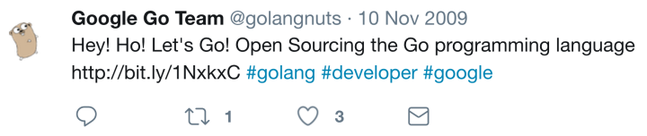
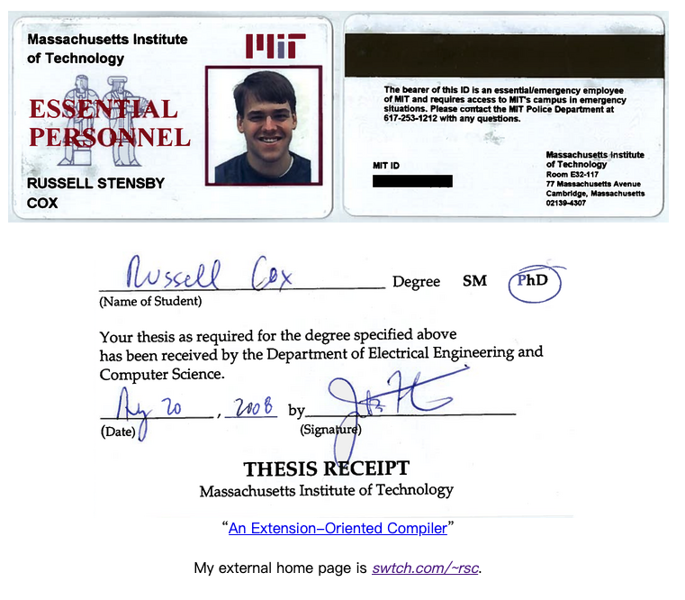
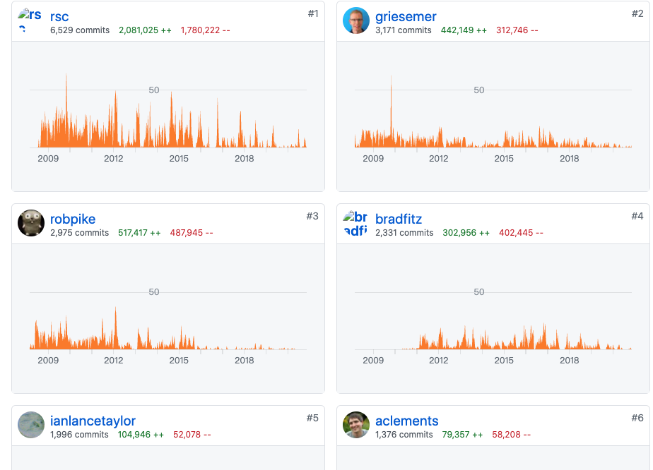

Go 语言名人：除了 Rob Pike，很多人可能不知道他
大家好，我是站长 polarisxu。
今天和大家聊聊 Go 语言名人的那些事。
01
说起 Go 语言，很多人知晓有三个创始人。在 2007 年 09 月 25 日，Rob Pike 发了一封邮件：

所以一般认为 Rob Pike、Robert Griesemer 和 Ken Thompson 是 Go 的创始人，而很长一段时间，Rob Pike 在引领 Go 团队，同时在一些公众场合经常出现，因此大家对 Rob Piike 更熟悉。关于他们三个的情况，网上资料挺多的，这里不说了。
今天说的是另外一个人。在 Go 项目启动后不久，Russ Cox 和 Lance Taylor 也加入了 Go 语言的设计团队。他们 5 人一起开发了两款编译器和一个标准库，为 2009 年 11 月 10 日 Go 语言以开源方式发布打下了基础。

问题：为什么说开发了两款编译器？
是的，今天要说的这个人就是 Russ Cox，他是现在 Go Team 的 Leader。
02
Russ Cox，网络上的昵称是 rsc，2008 年博士毕业于 MIT（麻省理工学院），毕业后就加入了 Go 核心设计开发团队，非常年轻。下面是毕业证信息，在 MIT 网站可以查到：https://pdos.csail.mit.edu/~rsc/ 。

关于 Russ Cox 加入 Google 进入 Go Team 团队有一段小故事，这是 Russ Cox 本人在 2018 年 4 月份参加第 77 期 GoTime 时讲述的。
我上大学时就曾与 Rob Pike 合作参与 Plan 9 操作系统的开发，之后在 Google 研究院实习。当我读完研究生（博士）时，Rob 告诉我有关 Go 的内容，大概是说：“我们正在尝试吸收我们在 Plan 9 上开发软件时真正喜欢的所有东西，并使它们能够用于我们在 Google 的日常编程中。你想帮忙吗？”我当时想，“是的，当然。” 就这样我加入了 Go 团队。
有趣的是，我在想这件事（因为你可能会问这个…那是十年前的事了），我自己不敢相信这有多幸运，因为我完成博士研究生学业的时候，这份工作随之而来，就像是我过去十年所做的所有事情的完美结合。似乎过去做的事情是为做 Go 这件事做铺垫。 然后我和所有这些伟大的人一起工作，比如 Rob，Ken，Robert Griesemer，Ian Taylor。。。我们辛苦了两年，然后 Go 开源了。
然后真正令人惊讶的事情发生了，坦诚地说，我们没有人预料到，我们选择开源后，人们竟然想使用 Go。这对我们来说很震惊。 我在发布（开源发布）前几天对 Rob 说，我希望也许有几个人会注意到，理想的情况是，无论下一个大语言是什么，都会窃取 Go 的并发和接口思想。这将是我们使编程更好一点的微小贡献。
大牛果然一开始就很厉害！
此外在这个 Go Time 中，Russ Cox 谈到了较多 Plan9 的事情以及大篇幅说道 vgo 的设计。当然还有很多其他内容，虽然过去 2 年了，感兴趣的可以去读一读。
实际上，几年前开始，Russ Cox 就已经是 Go Team 的技术负责人（Leader）。他会做一些领导工作，并帮助确定优先事项等。很多拿不定主意的决策都是 Russ Cox 最后拍板，很多时候他都是力排众议。相信大家印象最深的就是他设计的 vgo，即 Go Module 的前身，在这之前可是已经有了 dep 这个准官方解决方案。为此有一个 Go 的社区贡献者写文说 Go 是 Google 的而非社区的。Russ Cox 对此进行了回应 ，同时引用了他 2015 年发表在 Go 官方博客上的文章 （那时候似乎就意识到会有这样的事情发生？）。这里我不做任何评价，相信每个人心里有自己的一杆秤。
在整个 Go 代码仓库中，Russ Cox 提交的代码量是最多的。

03
推荐下 Russ Cox 的博客：https://research.swtch.com/ ，涉猎比较广。其中有一篇文章预测了世界上有多少 Go Developers 。你觉得有多少？
Russ Cox 预测，截至 2019 年 11 月，估计是 115 万到 196 万。
他给了一个预测的方法：
Number of Go Developers = Number of Software Developers × Fraction using Go
所以我们需要回答世界上有多少软件开发人员，以及他们使用 Go 的百分比。这些数据主要通过一些第三方发布的调查、统计得到。有兴趣的可以看看他的预测方法。
最后他得出：
-
2017 年 7 月，在 1680 万-2100 万的开发者中，有 3%-4.6％ Go 开发者，即 50 万 — 90 万；
-
在 2018 年 7 月，在 1840 万-2300 万的开发者中，有 4.6%-7.1％ Go 开发者，即 85 万 - 163 万；
-
在 2019 年 11 月，在 1890 万-2390 万的开发者中，有 6.1%-8.2％ Go 开发者，即 115 万 - 196 万；
你觉得中国有多少 Go 开发者？
04
Go 有这样的大牛主导开发，未来会越来越好！
看看大牛的书房，除了各种书，我相信吸引你眼光的是那些 gopher 小玩偶吧！
关于 Russ Cox，你还知道哪些事情？欢迎留言交流。